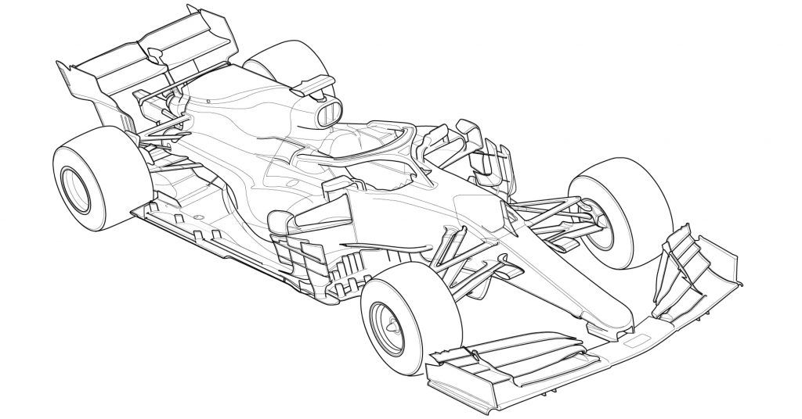

Formula 1 (F1) is a highly regulated motorsport, governed by a comprehensive set of rules to ensure
fair
competition and safety. These rules cover various aspects of the sport, including car specifications, sporting
conduct, and race procedures. Let's delve into some of the key regulations that shape the world of Formula 1.
Car Regulations: F1 cars are subject to strict technical specifications. These include restrictions on
dimensions, weight, and aerodynamic features. The rules also govern the power units, which consist of hybrid
engines combining internal combustion engines and energy recovery systems. Furthermore, there are guidelines on
tire usage, fuel limits, and permitted electronic aids to maintain a level playing field.
Sporting Conduct: To ensure fair competition, F1 has regulations on sporting conduct and driver behavior. Rules
govern overtaking, defending positions, and penalties for unsportsmanlike conduct. Drivers must adhere to track
limits and avoid dangerous maneuvers that could jeopardize their safety or that of their fellow competitors.
Additionally, regulations exist to prevent unauthorized assistance during the race, such as receiving external
information or support.
Race Procedures: Formula 1 races follow specific procedures to ensure consistency and safety. These procedures
include the formation lap, where cars warm up their tires before lining up on the starting grid. The standing
start, with lights signaling the beginning of the race, is a defining moment. Pit stops, during which teams
change tires and perform adjustments, are tightly regulated to maintain safety and fairness. Virtual Safety Car
(VSC) and Safety Car (SC) protocols are also in place to manage incidents during races.
Technical Inspections: F1 has rigorous technical inspections to ensure compliance with the rules. Cars undergo
pre-race and post-race scrutineering, where officials verify compliance with technical regulations. Weight
checks, fuel sample testing, and aerodynamic conformity assessments are conducted to prevent any unfair
advantages.
Evolution of Rules: Formula 1 rules are not static and evolve over time. The FIA, in collaboration with the
teams, regularly reviews and updates the regulations to improve the sport. These changes may focus on enhancing
safety, reducing costs, increasing competitiveness, or embracing new technologies. It is through this iterative
process that Formula 1 continues to evolve and captivate fans around the world.

1.Technical Regulations: The technical regulations in Formula 1 govern the design and construction of
the cars. They cover various aspects such as the dimensions and weight of the car, including specific limits on
the length, width, and height. The rules also outline the restrictions on aerodynamic components, such as the
front and rear wings, bargeboards, and diffusers, to control downforce and airflow. Additionally, there are
regulations on the power unit, which includes the engine, energy recovery systems, and fuel usage limits.
2.Sporting Regulations: The sporting regulations dictate the conduct of the teams and drivers during races and
other events. These rules include guidelines on overtaking, defending positions, and the use of team orders.
Drivers must stay within the track limits and avoid dangerous driving, such as sudden movements or erratic
behavior that could endanger themselves or other competitors. The regulations also cover penalties for
infractions, which can range from time penalties to grid penalties or disqualification.
3.Qualifying and Race Formats: Formula 1 has specific rules for qualifying sessions and race formats. Qualifying
consists of three knockout stages, with drivers aiming to set the fastest lap times to determine their starting
positions for the race. The race itself follows a set number of laps or a maximum time limit. The winner is the
driver who completes the race distance first, unless there are penalties or disqualifications applied. In recent
years, Formula 1 has introduced sprint races on select weekends, which follow a shorter format and determine the
starting grid for the main race.
4.Safety Regulations: Safety is a paramount concern in Formula 1, and the regulations reflect this. There are
guidelines on safety equipment, such as the mandatory use of helmets, fireproof suits, and HANS (Head and Neck
Support) devices. The rules also specify safety requirements for the circuits, including the placement of
barriers, run-off areas, and the implementation of safety protocols in case of incidents or accidents during
races.
5.Steward Decisions and Review: Stewards play a crucial role in enforcing the rules during race weekends. They
review incidents, such as on-track collisions or rule infringements, and determine whether penalties or
sanctions are warranted. Stewards have access to various tools, including video replays and telemetry data, to
assist in their decision-making process. In certain cases, teams or drivers have the right to appeal decisions
to the International Court of Appeal, which is the final authority in rule disputes.
additional details provide a deeper understanding of the technical, sporting, and safety aspects covered
by the regulations in Formula 1. Remember to consult the official Formula 1 rulebook and any updates or
amendments to ensure accuracy and up-to-date information for your website.